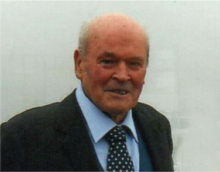
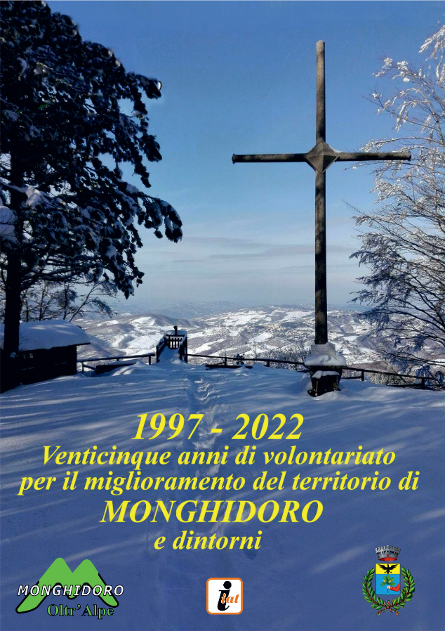

note di carlo mezzini - primo presidente ed attualmente presidente onorario dell'organizzazione di volontariato oltr'alpe
 Sono ormai 56 anni che ho trasferito la mia residenza a Monghidoro e fin dai primi tempi ho dedicato un po' del mio tempo al volontariato. Ma fu nel 1985 che, entrando a far parte della lista civica e rivestendo la carica da Assessore ai lavori pubblici e dell'ambiente, iniziai ad approcciarmi a quello che sarebbe stato il mio sogno nel cassetto: l'Alpe. Iniziai ad organizzare delle giornate ecologiche ed una domenica mattina nell'ufficio del Comune, che aprivo anche nei giorni festivi per cercare di venire incontro alle esigenze della gente, si presentò un signore, un certo Giuseppe Monti (detto Gaggio) che aveva sentito parlare del mio interesse per l'ambiente. Durante il nostro incontro mi fece capire che solo rispettando l'ambiente si poteva creare un futuro migliore per le generazioni future. E venne fuori che lui faceva parte di un gruppo di volontari dediti all'ambiente e che il suo obbiettivo principale era l'Alpe, in particolare il ripristino delle sorgenti.Da quel momento nacque una grande amicizia fatta di totale collaborazione, rispetto e supporto sia morale che materiale. Grazie Gaggio per la tua amicizia, per l'appoggio materiale e morale incondizionati che non mi hai fatto mai mancare e per tutto ciò che mi hai trasmesso. Passarono gli anni e nel 1995 tornai nuovamente a ricoprire il ruolo di Assessore ai lavori pubblici e all'ambiente ma nel frattempo avevo perso un amico, avevo perso Gaggio. Una domenica pomeriggio sul Balzo Arcigno, seduto su uno spuntone di roccia, notai che il panorama da lì era davvero bellissimo, che tutto intorno era bellissimo e pensai che l'Alpe poteva essere il futuro, l'Alpe era il futuro. I progetti che immaginavo nella mia testa però rischiavano di non esser realizzati: il Comune non poteva investire sul privato e di conseguenza non poteva fornire le risorse necessarie per fare partire i lavori. Ma non potevo neanche arrendermi perché avevo un dovere morale nei confronti di Gaggio che si faceva sempre più pressante. Iniziai quindi a pubblicizzare il mio progetto e la domenica mattina, prima di presenziare in ufficio, iniziai a distribuire volantini e pacche sulle spalle alle persone che incontravo, strappando qua e là promessa di incontrarci lassù (sull'Alpe). Ed è da qui che è iniziato tutto: dal 1997 al 2000 un susseguirsi di giornate ecologiche che hanno fatto registrare ben 2075 ore di lavoro manuale e ben 412 ore di lavoro con mezzi meccanici. Pian piano l'Alpe stava sbocciando nella sua bellezza. È doveroso da parte mia ringraziare di cuore tutti i volontari che hanno reso possibile la realizzazione di ciò che tutti, lontani e vicini, oggi possono vivere ed usufruire. E la memoria vola a quella domenica mattina, a Gaggio in particolare a tutti i volontari che si sono susseguiti e che come lui non ci sono più: di loro custodirerò un caro e bellissimo ricordo pieno di gratitudine. |
25 anni di lavori Libro dei 25 anni (Scarica il PDF)  |